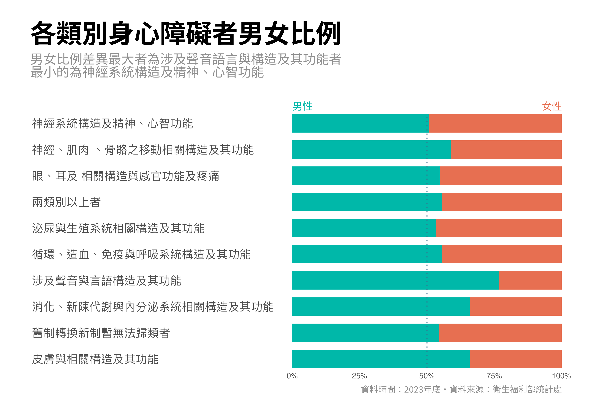

長條圖簡易使用指南
barplot
Design
利用簡單的例子說明如何設計更加簡單易懂的長條圖
很多人在做資料分析時，都使用過長條圖。長條圖簡單易懂，探查資料中的洞見與傳達資訊時，非常有用的工具。但差勁的設計會影響其傳達訊息的能力，甚至有可能扭曲資料分析的結果。長條圖被廣泛使用，不理想的設計亦因此隨處可見。如果你想順利發揮長條圖直觀且易理解的特性，這篇文章可以助你一臂之力。
本文分為兩個部分，一是回答「長條圖是什麼？」這個問題，包含基本原理、使用時機、與直方圖的差異等；二是提供實用的長條圖設計訣竅，供你在實際製作長條圖時使用。
長條圖(Bar chart)是什麼？
長條圖的基本原理是使用長方形圖形(bar)的長度或高度來表示數值的大小，較長的長條就代表較大的數值，以非常直觀的方式幫助我們比較大小。下面這個圖中，長條的長度就代表一個類別的身心障礙者人數，我們可以很直覺的知道哪一個類別的人數較多：
{kind=link}
比較類別是長條圖最常見的使用方法之一，另一個則是比較時間。下面長條圖呈現可支配所得的變化趨勢：
{kind=link}
還有另一種大家不那麼熟悉的用法是顯示比例，整個長條代表整體，不同顏色的色塊面積代表不同類別的比例。下面這個圖就使用長條圖呈現男性及女性比例： 
{kind=link}
長條圖常用的使用情境：
比較類別間的數值大小
呈現一個數值隨時間的變化
呈現不同類別佔整體的比例
與直方圖(Histogram)的差異
直方圖(Histogram)與長條圖(Bar chart)應該是大家最會搞混的兩種圖形。會搞混的原因應該是因為它們都使用長方形的高度來呈現數值大小。下面是一個直方圖，乍看之下，確實可能跟長條圖搞混：
兩種圖形最主要的差異在於呈現的資料類型不同。直方圖是用來呈現連續數值的分配，而長條圖是比較類別變數的大小。舉例來說，我們手邊有一組資料，共100筆的數值：
[1] 13.0941177 8.8922901 3.0623961 12.3631410 14.5816235 6.2395089
[7] 14.8336592 7.0460153 4.2069263 5.4084836 1.3367190 10.8728838
[13] -2.1072718 14.9574719 3.9468099 7.6710793 14.0978245 10.1093619
[19] 0.2004788 6.3350360 3.8797077 15.8554015 9.2545337 8.2051601
[25] 3.0104468 -0.6704853 14.9010650 9.0619196 11.1189024 7.4360211
[31] 13.4882569 7.9441263 14.0973091 6.5058297 10.5648450 15.8080060
[37] 2.4994063 10.4944401 5.7276256 9.2553102 12.4873004 5.8472283
[43] 8.3326551 5.8132685 10.3535922 10.5713569 6.7280432 13.5065015
[49] 12.6405165 -3.8114958 4.4529053 12.3608019 7.3070022 10.0142793
[55] 5.3190120 3.0029646 -4.2756696 5.5137790 10.3558045 14.5096438
[61] 17.1788957 6.9784123 9.3168954 12.0465077 1.5601024 6.5660699
[67] 1.2783804 10.9231437 3.4835228 3.7151623 6.0363279 13.2502347
[73] 15.0518550 1.3681354 7.3987526 10.9889099 17.6000317 9.4193840
[79] 15.1379729 8.7324156 16.0333143 4.2271625 1.1732007 6.3283362
[85] 10.4212947 14.6760112 10.7550021 10.6286384 7.9156159 10.7992164
[91] 13.5640323 6.8031610 7.8322762 13.5893410 10.8194256 -2.0969881
[97] 6.2025420 21.6424836 3.8429018 9.8301474直方圖的做法是，將連續的數值範圍切分成若干個數值區間，接著將每一筆數值歸類到區間裡面，再計算每個區間中有幾筆資料，長方形的高度就代表每一區間中的數量，以此來觀察整組資料的分配，或者說是呈現這組資料的大致輪廓。
除此之外，在圖形的呈現上，有一細微的差異，直方圖因為是連續的範圍，長方形之間是緊密靠近的，長條圖得長方形則是有距離的。
直方圖：
長條圖：
Note
直方圖呈現連續變數的分配，長條圖則呈現不同類型數量的大小
設計上的小訣竅
在這一部分，我會提供實際在製作長條圖時可使用的設計訣竅，包括使用時機與背後的理由。
1. 依大小排序
比較高度是圖表使用者解讀長條圖時的主要任務，讓比較高度變得容易則是設計者的責任。將類別依據大小排序能有效的幫助讀者比較長方型的長度。
請觀察下方這個長條圖：
你能很快地看出A和J哪一個比較大嗎？我想應該很難。透過排序，我們可以讓讀者很快速且輕易的比較大小：

很清楚的，J是比A大的。
排序的效果在種類越多時越好。如果只比較3個種類，那無需排序也能順利的比較大小：
如果有25個種類要比較呢？這時比較會變得困難，你可以試著閱讀下面這個圖，並嘗試比較其中的類別：
排序之後，類別間的大小次序會變得更加清楚：
並非所有的長條圖都需要排序，呈現時間變化的長條圖即是例外，或者更廣泛地說，種類間存在固有次序時，排序都不是個好主意。時間有次序，大、中、小有次序、年齡組也有次序，這些都是不要依大小排序的情形。
Tip
- 依數值大小排序有利於做比較。
- 存在固有次序的類別不需排序，例如時間、年齡組。
2. 在類別名稱很長時，使用橫向長條圖
怎麼樣的情況算得上類別名稱很長呢？以下是一個比較極端的例子：
因為身心障礙者的類別名稱都很長，使用一般的長條圖時，名稱會互相重疊，無法判讀類別的名稱。這個例子或許有點太極端了，但因空間不足，造成類別名稱難以判讀的長條圖隨處可見。因為名稱是由左讀到右，因此使用橫向長條圖能緩解這個問題。
3. 從0開始的長條，才能正確的比較數值
長條圖使用長條的長度表示數值的大小，所以長條的長度必須反映數值間的大小及比例關係。具體來說，代表數值100的長方形應該要比代表數值50的長方形而且長度要是兩倍：
但常見的錯誤是截斷長條圖，讓長條圖不從0開始「生長」。這樣的設計會給讀者錯誤的印象，傳達不準確的資訊。舉例來說，觀察下面這個六都房屋自有率的長條圖：
單就圖形帶給你的印象，你會覺得臺中市相較於台南市低很多，並且台中市也比其他4都都來得低。就是因為沒有從0開始才給你這種印象，正確的畫出來的話應是：
其實六都的自有率都蠻高的，而且差距並不算太大。能更好顯示出六都房屋自有率差距的是，以全台自有率作為基準：
通常使用截斷的長條圖的理由是想要凸顯某些沒那麼明顯的差距，以支持自己的論點，大家在閱讀長條圖時要特別注意，自己在設計時也請別這麼做。
4. 不要用太多的顏色，用顏色強調差異
這一節主要想講述顏色的使用，顏色所帶來的視覺差異能用來強調資料中的差異，像是呈現不同類別或數值。因此，當已使用其他方法呈現差異時，不需要再使用顏色來顯示差異。在長條圖的例子中，最常見的是將所有的長條以不同的顏色呈現：
長條圖已使用擺放在不同位置、不同長度的長條來顯示差異，太多的顏色沒有實質的作用，反而會讓圖形過於雜亂，尤其在選擇的顏色過於炫目的時候。
顏色在長條圖中最主要的使用方法是用來表示差異。舉例來說，用來表示特別高的數值或顯示不同的次類別。
或是可以用來區別不同方向的數值：
5. 當數值的差異很大的時候，該怎麼辦呢？
另一個使用長條圖時常見的問題是要比較的數值差異過大，過大的那個數值會讓其他較小數值間的差異變得不明顯，甚至是令人難以判別。請觀察下面這個例子：
因為A的數值大大了，讓其他數值間的差異變得微乎其微。B的數值其實是D的4倍，D是E的5倍，但我們很難在圖中感受到這些資訊。
想要解決這個問題，其中一個辦法是將數值分到另一個圖形做比較。拿上面那個例子來說，可以把除了A以外的數值分開來放在另一個圖形，讓其他數值可以正常的做比較：
另一種作法則是改成使用點圖(dot plot)，並使用對數尺度呈現數值：
以上就是我統整出來的長條圖使用訣竅，希望能幫助你做出更加容易理解的長條圖。